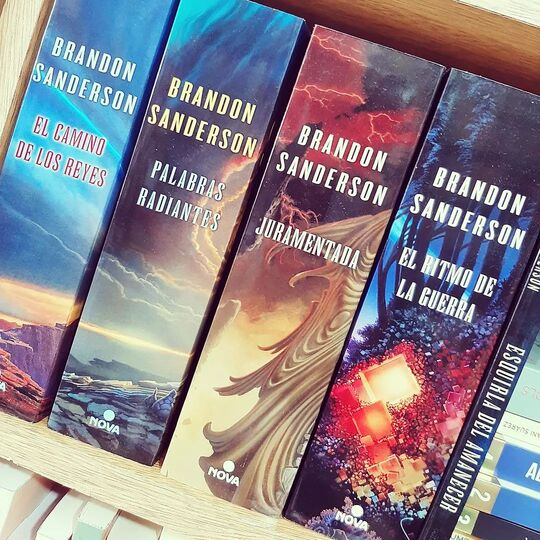

Provengo de una saga de libros de un autor americano llamado Brandon Sanderson, del cual soy uno de los protagonistas. Esta saga tendrá hasta 10 libros de mas de 1000 páginas y ya van 4 libros principales. Estos libros son "El camino de los reyes", "Palabras radiantes", "Juramentada" y "El Ritmo de la Guerra".
Aunque no sea Cuentacuentos, conozco varias fuentes que sabrán contar bien mi historia y la de mi mundo: